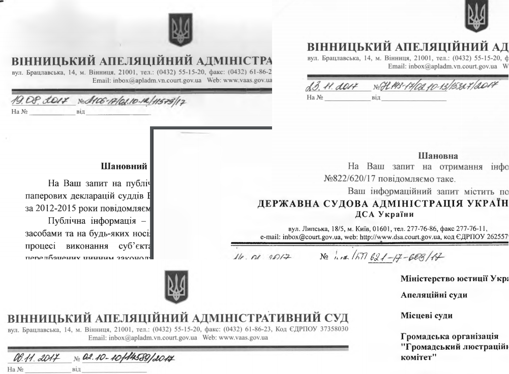

Публічна інформація – це відображена та задокументована будь-якими засобами та на будь-яких носіях інформація, що була отримана або створена в процесі виконання суб’єктами владних повноважень своїх обов’язків, передбачених чинним законодавством, або яка знаходиться у володінні суб’єктів владних повноважень, інших розпорядників публічної інформації, визначених цим Законом.
Рішення, дії чи бездіяльність розпорядників інформації можуть бути оскаржені до керівника розпорядника, вищого органу або суду. Запитувач має право оскаржити:
відмову в задоволенні запиту на інформацію;
відстрочку задоволення запиту на інформацію;
ненадання відповіді на запит на інформацію;
надання недостовірної або неповної інформації;
несвоєчасне надання інформації;
невиконання розпорядниками обов’язку оприлюднювати інформацію відповідно до статті 15 цього Закону;
інші рішення, дії чи бездіяльність розпорядників інформації, що порушили законні права та інтереси запитувача.
Відповідальність за порушення законодавства про доступ до публічної інформації несуть особи, винні у вчиненні таких порушень:
ненадання відповіді на запит;
ненадання інформації на запит;
безпідставна відмова у задоволенні запиту на інформацію;
неоприлюднення інформації відповідно до статті 15 Закону України «Про доступ до публічної інформації»;
надання або оприлюднення недостовірної, неточної або неповної інформації;
несвоєчасне надання інформації;
необґрунтоване віднесення інформації до інформації з обмеженим доступом;
нездійснення реєстрації документів;
навмисне приховування або знищення інформації чи документів.
Перелік наборів даних, які підлягають оприлюдненню у формі відкритих даних на офіційному веб-сайті ВААС:
Найменування суду.
Інформація про місцезнаходження суду, номери засобів зв’язку , адресу веб-сторінки та електронної пошти.
Прізвище, ім’я, по батькові, службові номери засобів зв’язку голови суду та його заступників, керівника апарату суду та його заступника, керівників структурних підрозділів.
Графік роботи суду…
Закон України «Про доступ до публічної інформації» від 13.01.2011 № 2939-VI Цей Закон визначає порядок здійснення та забезпечення права кожного на доступ до інформації, що знаходиться у володінні суб'єктів владних повноважень, інших розпорядників публічної інформації, визначених цим Законом, та інформації, що становить суспільний інтерес.
Положення визначає порядок доступу до публічної інформації, що знаходиться у володінні Вінницького апеляційного адміністративного суду (далі – ВААС). Положення розроблено на виконання Закону України «Про доступ до публічної інформації» від 13.01.2011 № 2939-VI
Перелік відомостей, що становлять службову інформацію, та які можуть міститися в документах з організації діяльності Вінницького апеляційного адміністративного суду.

Форма письмового запиту на інформацію (для фізичних осіб);
Форма письмового запиту на інформацію (для юридичних осіб);
Форма письмового запиту на інформацію (для об”єднання громадян);
Форма електронного запиту;
Інструкція щодо заповнення електронного запиту на інформацію.
Взаємодія Вінницького апеляційного адміністративного суду із засобами масової інформації відбувається відповідно до Конституції України, законів України «Про судоустрій і статус суддів», «Про порядок висвітлення діяльності органів державної влади та місцевого самоврядування в Україні у засобах масової інформації», «Про доступ до публічної інформації», «Про інформацію», «Про друковані засоби масової інформації», «Про телебачення і радіомовлення», «Про інформаційні агентства» .
Оприлюднена інформація, на виконання пункту 10 статті 15 Закону України «Про доступ до публічної інформації».
Публічна інформація є відкритою, крім випадків, встановлених законом. Робота із публічною інформацією в Вінницькому апеляційному адміністративному суді проводиться відділом по роботі зі зверненнями громадян та юридичних осіб, який знаходиться за адресою 21001, м. Вінниця, вул. Брацлавська, 14 (e-mail: inbox@apladm.vn.court.gov.ua)